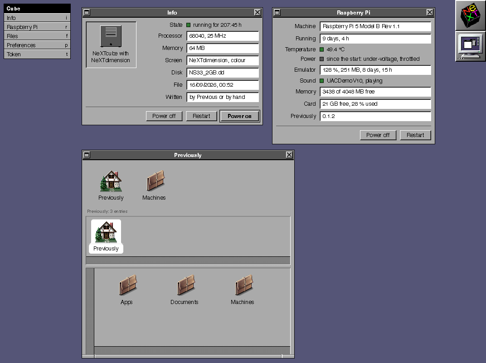

Nothing but NeXTSTEP
The emulator takes the first console at boot and keeps it. There is no desktop underneath and no console login to step past, so the machine is the thing it is pretending to be.
Previously starts straight into a NeXT machine under the Previous emulator. There is no desktop behind it, no login to get past, and nothing on the screen but the grey NeXT panel.
Run it as the user the machine will belong to, not under
sudo. It asks for your password once and says when it is done where
the admin answers.
What it is
The Pi merges into a NeXT. Everything you would normally do directly in the Previous Settings on the Pi can now be done conveniently in a browser on another computer.
The emulator takes the first console at boot and keeps it. There is no desktop underneath and no console login to step past, so the machine is the thing it is pretending to be.
You select NeXT machines, drives, and displays instead of entering values manually. You can switch between complete configurations using D&D. Change the values in the system configurations and save them as your own.
Every step of the install script writes down how to undo what it just did. Press Ctrl+C, or let a step fail, and it walks that record backwards. Whatever was on the machine before is left where it was.
The admin
Nothing here is approximated. The icons are the original files out of a NeXTSTEP 3.3 disk image, the window buttons are cut pixel for pixel out of the running system, and every colour, edge and raster is measured off it.

Install
You need a Raspberry Pi 5 and a card imaged with Raspberry Pi OS Lite, 64 bit, based on Debian 13. The script refuses anywhere else, because Previous needs SDL3 and no earlier release carries it.
Over SSH is the comfortable way, and it stays the way in afterwards: the emulator owns the screen once this is done.
It installs the emulator from its own signed archive, fetches a preinstalled NeXTSTEP 3.3 disk image, writes the configuration, installs the admin tool and hands the first console over.
curl -fsSL https://previous.li/install.sh | bash
It answers at http://<your-pi>.local:8810
and asks once for a token, which the script tells you how to read.
Before you run it
The script reads no file beside itself, so the one file on
GitHub is all of it. Nothing runs until the last line calls main,
which means a download cut short runs nothing at all.
An existing disk image, an existing configuration and a
startup entry that is already there are all left alone. Your own NeXTSTEP image
in ~/nextstep is found and used instead of a download.
An interrupt and a failing step both walk the record of changes backwards. Only this run's own changes are reversed, and a step that skipped itself has nothing to take back.